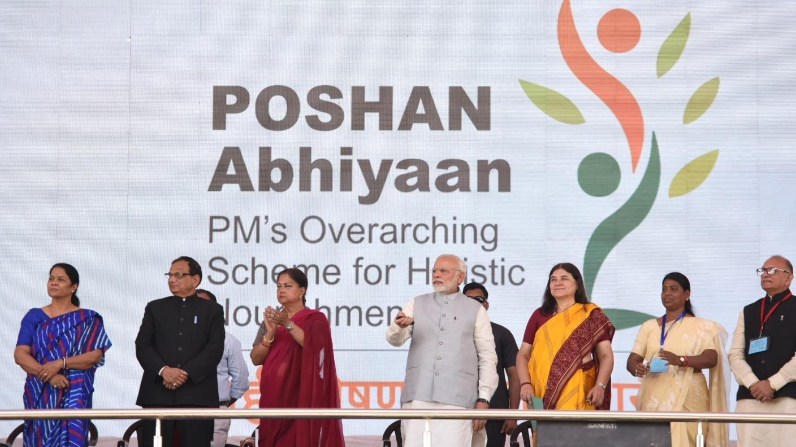
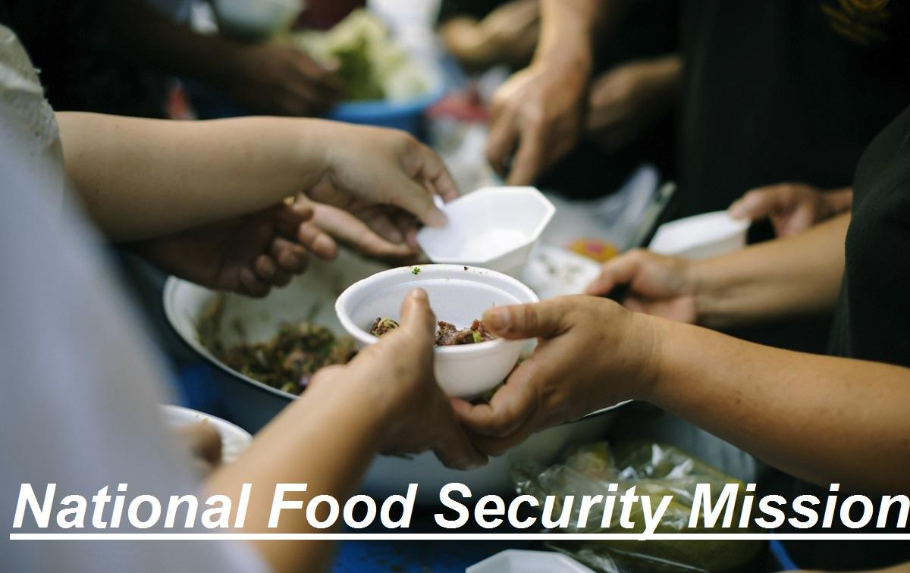
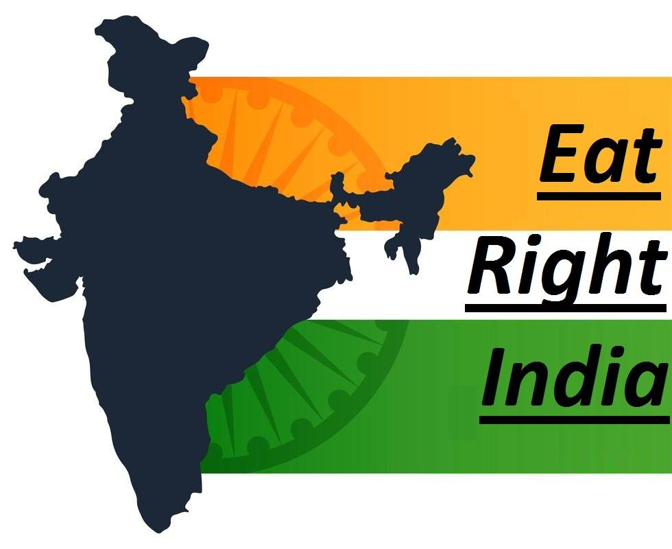
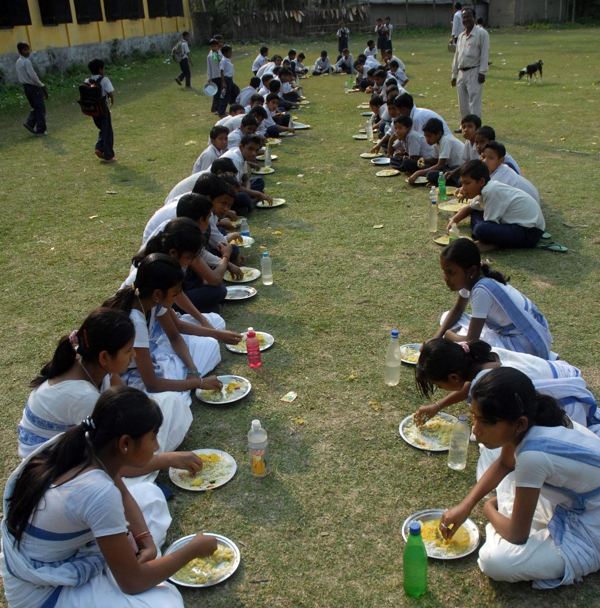

Government Agencies and Collaboration
National Nutrition Mission
National Nutrition Mission, also known as POSHAN (The Prime Minister’s Overarching Scheme for Holistic Nutrition) Abhiyaan is Government of India’s flagship programme to improve nutritional results for children, pregnant women and lactating mothers. This mission was launched by the Prime Minister Narendra Modi on the occasion of the International Women’s Day on 8th March, 2018 from Jhunjhunu in Rajasthan. The POSHAN (Prime Minister’s Overarching Scheme for Holistic Nutrition) Abhiyaan draws the attention of the nation towards the issues of malnutrition and address it in a mission-mode.
There was a very important role of NITI Aayog in shaping the POSHAN Abhiyaan. NITI Aayog released the National Nutrition Strategy in September, 2017, which presented a micro analysis of the issues continuing to happen within this area and chalked out an in-depth strategy for the possible solutions. Most of the recommendations presented by NITI Aayog have been included within the design of the POSHAN Abhiyaan and NITI Aayog has been entrusted with the task of closely monitoring the POSHAN Abhiyaan and undertaking regular evaluations.

POSHAN Abhiyaan has the aim to build a people’s movement (Jan Andolan) around malnutrition and intends to significantly reduce malnutrition in the following three years.
There are four point strategy/pillars of the mission for implementation of POSHAN Abhiyaan:
* Inter-sectoral alliance for better service delivery
* Using technology (ICT) for real time growth monitoring and tracking of women and children
* enhanced health and nutrition services for the first 1000 days
* Jan Andolan
As a part of its mandate, NITI Aayog is responsible to submit the implementation status reports of POSHAN Abhiyaan every six months to the Prime Minister’s Office and the task of implementation of POSHAN Abhiyaan is to be done by the Technical Support Unit (TSU) established at NITI Aayog which, in addition to the Monitoring & Evaluation, will also assist in research, policy and technical support to the Abhiyaan.
POSHAN Maah
The month of September 2018 was celebrated as Rashtriya POSHAN Maah, in which the activities were emphasized on (SBCC) Social Behavioural Change and Communication. The broad themes of POSHAN Maah were: prenatal care, optimal breastfeeding (initial and exclusive), complementary feeding, anaemia, growth monitoring, girls’ – education, diet, right age to marry, hygiene and sanitation, eating healthy – food fortification.
It is worth mentioning that the various activities undertaken during POSHAN Maah have reached out to more than 12.2 Crore women, 6.2 Crore men and over 13 Crore children (male and female). Thus, more than 30.6 Crore people were reached in 30 days, which is worth notable. POSHAN Maah has given a major acceleration to the Abhiyaan.
National Food Security
National Food Security Mission (NFSM) was launched in the year 2007-08 with the aim to increase the production of rice, wheat and pulses through
1 Expansion of area and productivity enhancement,
2 Restoring soil fertility and productivity,
3 Generating employment opportunities and
4 Enhancing farm level economy.

From 2014-15 coarse cereals were also included in the Mission under NFSM. There are various interventions covered under NFSM, like:
- Demonstrations of cluster on improved package of practices
- Demonstrations on cropping system
- Distribution of Seed having high yielding varieties
- Farm machineries/resources conservation machineries/tools
- Efficient water application tools
- Plant protection measures
- Nutrient management/soil ameliorants
- Trainings to the farmers based on cropping system etc.
NFSM continued during 12th Five Year Plan with the goal of producing additional 25 million tonnes of food grains. Beyond the 12th Five Year Plan, the mission was being continued with new additional goal of producing 13 million tonnes of foodgrains from 2017-18 to 2019-20. India achieved bumper production of foodgrains during 2017-18 at 285.01 million tones and as per 4th Advance Estimates; total foodgrains production achieved during 2018-19 was 284.95 million tonnes. NFSM is being implemented in identified districts of 29 states across the nation.
Thus, the National Food Security Mission implemented eight strategies to accomplish its objectives, which are as follows:
To place focus on districts with low production and significant potential
To establish cropping system-centric inventions
To inherit “agro-climatic zone wise planning and cluster approach for crop productivity enhancement”
To develop focus on annual crop (pulses) production and grow them with diverse crops
“Promotion and expansion of improved technologies such as integrated pest management (IPM), seed, input use efficiency, integrated nutrient management (INM) and resource conservation technologies along with the capacity building of the farmers/extension functionaries”
“Monitoring the fund flows very closely to make sure timely reach of interventions to the target beneficiaries”
Combining multiple interventions and the goals of each district and its plans
“Executing agencies for assessing the effectiveness of the interventions for an outcome-oriented approach”
Zero Hunger Programme
The Zero Hunger Programme is an ambitious government scheme with the objective of reducing hunger across the nation. The Zero Hunger Programme in India was started in 2017 to improve agriculture, health and nutrition. This programme was created with the help of Indian Council of Agricultural Research, the Indian Council of Medical Research, the Biotechnology Industry Research Assistance Council (BIRAC) and the M.S. Swaminathan Research Foundation. The Zero Hunger Programme aims at:
- Decreasing child stunting for children 2 years and younger
- Making sure access to food all year round
- Creating stable food systems
- Increasing small farmer productivity and income
- Eliminating food wastage
The program also emphasizes on developing farm equipments, revamping the farming system, creating genetic gardens for biofortified plants and beginning zero hunger training. In India, most of the farmers don’t have an adequate amount of land and they also lack knowledge of technology. Without proper storage available, transportation and marketing places, most of the food is wasted.
Eat Right India Movement
According to the Food Safety and Standards Act, 2006, FSSAI is the body that is responsible to ensure that safe and wholesome food is available for the people in India. In this manner, the Eat Right India movement is a massive effort to transform the nation’s food system into safer and healthier eating habits.

Here are some important points which describe the ‘Eat Right India’ Movement:
1 It is a Pan-India (presence across nation) cycle movement aimed at creating consumer awareness about eating safe and nutritious food
2 ‘Eat Right India’, is based upon three broad pillars of ‘Eat Healthy’, ‘Eat Safe’ and ‘Eat Sustainably’
3 Cutting foodborne illnesses and various diet-related diseases cut across all age groups and all sections of the society. It also adopts a ‘whole of society’ approach and brings all stakeholders together on the same platform
4 It is a flagship programme in line with various initiatives including:
-Ayushman Bharat
-POSHAN Abhiyaan
-Anemia Mukt Bharat
-Swachh Bharat Mission
Significance & Objectives of Eat Right Movement
This campaign holds importance as it is not just aims at developing good food habits for the people of the nation but also promotes food that is good for the planet. It adopts a perfect mixture of regulatory, capacity building, collaborative and empowerment approach to make sure that both the parameters are followed.
The movement also considers a coordinative or ‘whole of the government’ approach since the movement unites food-related mandates of the agriculture, health, environment and other ministries.
The vision of Eat Right India is to create a culture of safe, healthy and sustainable food for everyone by 2050. Mission of the Eat Right India Campaign is to make Indian food Trans fat free by 2022 and to cut down salt/sugar and oil consumption by 30% in three years.
In-Line Initiatives of Eat Right India Movement
Various initiatives have been taken by the Union Ministry for Health and Family Welfare for the promotion of Eat Right Movement and to make people aware of its objectives as well as the importance of eating healthy food. Some of these initiatives include:
1 Eat Right India Handbook – The handbook has been created to guide various stakeholders regarding the implementation of Eat Right initiatives at the ground level and scaling up the Eat Right India movement.
2 Poshan Maah – Every year, the month of September is celebrated as Poshan Maah under the instructions of Ministry of Women and Child Development.
3 Eat Right Mela – In 2018 and 2019, this infotainment (information + entertainment) model was implemented to engage, encourage and enable citizens to eat right. They were an easy source for massive outreach to build awareness on safe food and healthy diets.
Mid Day Meal Programme
The Midday Meal Scheme is a school meal programme designed with the aim of improving the nutritional status of school-age children across the nation. The programme provides free Midday meals (lunches) on working days to the children of primary and upper primary classes in government, government aided local body, Madarsa and Maqtabs supported under Sarva Shiksha Abhiyan, Education Guarantee Scheme, and alternate innovative education centres and National Child Labour Project schools run by the ministry of labour. Under the Midday Meal Scheme, the midday meal is served to 120 million children in over 1.27 million schools and Education Guarantee Scheme centres, which makes it the largest of its kind in the world.

The Midday meal Scheme was first launched in Tamil Nadu, pioneered by the former Chief minister K. Kamaraj in the early 1960s. This scheme was implemented in all of the states by 2002 under the orders of the Supreme Court of India.
Ministry of Education being nodal ministry for the scheme changed the name of the scheme to PM-POSHAN (Pradhan Mantri Poshan Shakti Nirman) Scheme in September 2021. The Central Government also stated that an additional 24 lakh students receiving pre-primary education at government & government-aided schools would also be covered under the scheme by 2022.
The central and state governments share the cost of the Midday Meal Scheme in the 3:2 ratios, which means the centre will bear the 60 percent of the total cost and the state governments will bear remaining 40 percent. The central government provides grains and funding for other meal. Costs for facilities, transportation, and labour are shared by the centre and state governments. The 11th five-year plan allocated ₹384.9 billion (US$5.1 billion) for the scheme, while the 12th five-year plan was allocated ₹901.55 billion (US$12 billion), which is a 134 percent rise. The public expenditure for the Mid Day Meal Programme had increased from ₹73.24 billion (US$960 million) in 2007–08 to ₹132.15 billion (US$1.7 billion) in 2013–14. The Cost of cooking per child per day at the primary level has been fixed to ₹4.13, while at the upper primary level it is ₹6.18.
Collaboration

Collaboration between the food industry, governments, and NGOs can bring many benefits for food security and sustainability. For example, the food industry can share its expertise, innovation, and resources with governments and NGOs to develop and implement solutions that enhance food production, reduce food waste and losses, improve food quality and safety, and promote healthy and sustainable diets. Governments and NGOs can provide the food industry with guidance, incentives, and support to align its practices and goals with the public interest and the global agenda. Collaboration can also foster trust, dialogue, and accountability among different actors and sectors.
Collaboration for zero hunger involves the concerted effort of various stakeholders, including governments, non-governmental organizations (NGOs), international organizations, businesses, communities, and individuals. Here are some ways different stakeholders can collaborate to address the issue of hunger:
Government Policies and Programs:
Governments play a crucial role in implementing policies and programs aimed at eradicating hunger. This includes initiatives such as food assistance programs, subsidies for smallholder farmers, investments in agricultural infrastructure, and regulations to ensure food safety and security.
NGOs and Non-Profit Organizations:
NGOs and non-profit organizations often work directly with communities to provide food aid, nutrition education, agricultural training, and support for sustainable farming practices. They also advocate for policy changes to address the root causes of hunger and poverty.
International Organizations:
Organizations like the United Nations' Food and Agriculture Organization (FAO), World Food Programme (WFP), and World Health Organization (WHO) coordinate global efforts to combat hunger and malnutrition. They provide technical assistance, research, and funding to support initiatives aimed at achieving zero hunger.
Private Sector:
Businesses can contribute to zero hunger through corporate social responsibility (CSR) initiatives, partnerships with NGOs and governments, sustainable sourcing practices, and investment in agricultural innovation. Food companies can also donate surplus food to food banks and other charitable organizations.
Academic and Research Institutions:
Academic institutions conduct research on issues related to food security, agricultural productivity, nutrition, and poverty alleviation. They contribute expertise and knowledge to inform evidence-based policies and interventions.
Community Engagement:
Local communities are often at the forefront of efforts to address hunger and food insecurity. Community-based organizations, religious institutions, schools, and grassroots movements can mobilize resources, raise awareness, and implement solutions tailored to the needs of their communities.
Global Partnerships and Initiatives:
Collaborative initiatives such as the Sustainable Development Goals (SDGs), the Zero Hunger Challenge, and the Scaling Up Nutrition (SUN) Movement bring together governments, NGOs, businesses, and other stakeholders to coordinate action and monitor progress towards ending hunger on a global scale.
By working together across sectors and borders, stakeholders can leverage their unique strengths and resources to achieve the shared goal of zero hunger and ensure that everyone has access to nutritious food and a life free from hunger and malnutrition.